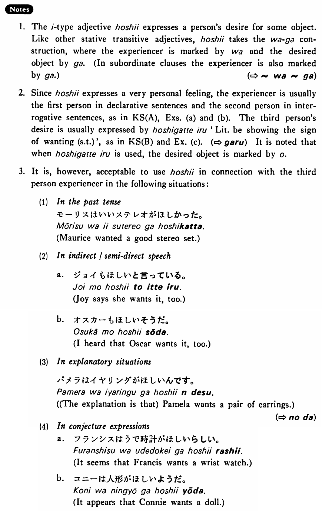

←
DoJG
→
欲しい・ほしい (1)
(B. 144)
Example sentences
(ksa).
私は車が
欲しい・欲しい
です。
I want a car.
(ksb).
弟は僕の自転車を
欲し
がっている・います。
My little brother wants a bike.
(a).
私は日本人の友達が
欲しい
。
I want a Japanese friend.
(b).
あなたは今何が
欲しいです
か。
What do you want now?
(c).
パムはステレオを
欲しがっている
。
Pam wants a stereo.
